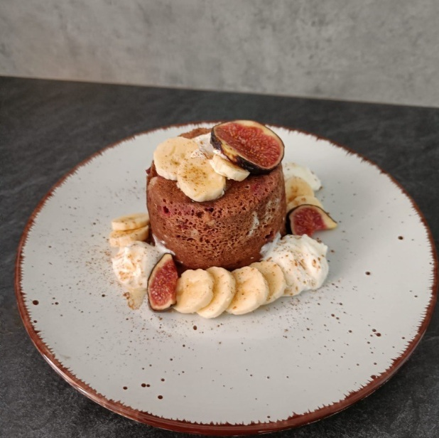
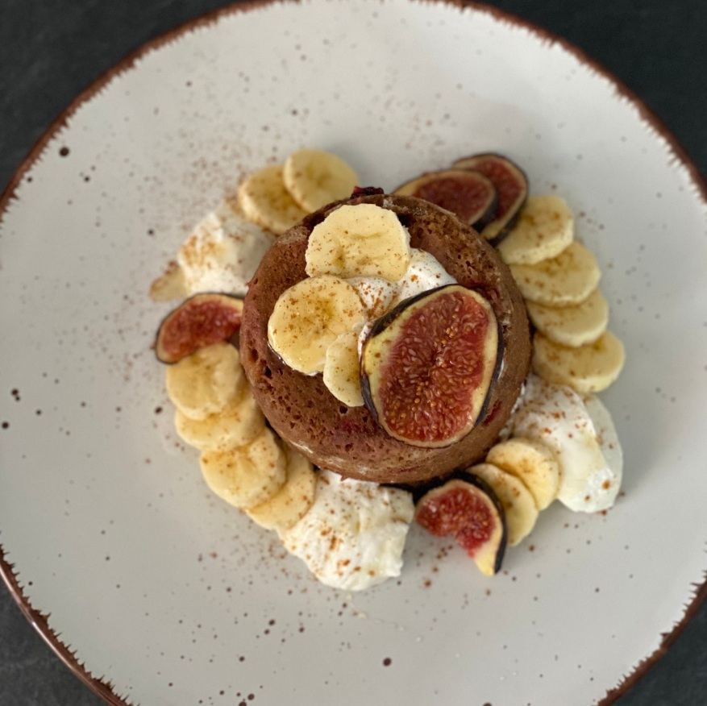

Kakaový mugcake


Ingredience na 1 porci
- 35 g pšeničné celozrnné mouky
- 15 g proteinového prášku
- 5 g kakaa
- 10 g čokolády
- ½ lžičky kypřicího prášku
- 1 vejce
- 60 g jablečného pyré
- 60 g kefírového mléka
Postup
Ve větším hrníčku (objem cca 500 ml) smíchám mokré ingredience, následně k nim vmíchám suché, včetně čokolády nasekané na kousky. Pořádně promíchám a připravenou směs peču v mikrovlnné troubě 3,5 minuty na nejvyšší výkon. Poté mugcake vyklopím a dozdobím dle chuti.